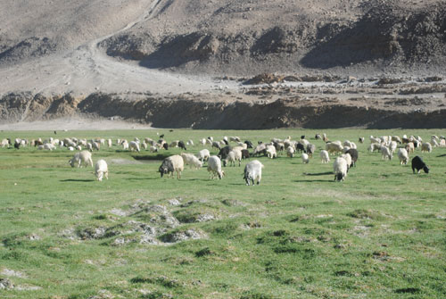

The Makers
Sixteen people work in the hub. Each has a page, and each is named on what they make.
Shabnam Devi
Spinner · 11 years · 62 pieces
I know a piece is finished when the thread stops arguing with me.
Bishan Dass
Weaver · loom no. 4 · 23 years · 48 pieces
My father had this loom. For twenty years it had nothing on it.
Rekha Devi
Embroiderer · 8 years · 71 pieces
A name takes me two days. I say it aloud while I work.
Sunita Devi
Spinner · 6 years · 39 pieces
The hardest part is the first hour. After that the hands remember.
Kamlesh Kumari
Spinner and dyer · 9 years · 44 pieces
Madder root is slow. It gives you the colour when it is ready.
Mohd. Rafiq
Weaver · loom no. 2 · 17 years · 53 pieces
I want whoever buys this to know it was not made in a hurry.
From goat to cloth, by hand

The fibre
Combed from Changthangi goats in Ladakh each spring. 12–14 microns.

Dehairing
The coarse guard hair is picked out by hand. No carbonising.

Spinning
On a charkha. About nine days of yarn for one shawl.

Weaving
On a khaddi. Three to six days, with organic starch on the warp.

From the hub in Basohli
Nine days to spin. Six to weave.
A power loom does this in five minutes. Ours took fifteen days and four people, and every one of them is named on the piece.
What we pay
| Work | Unit | Rate | On a €390 shawl |
|---|---|---|---|
| Dehairing and carding | per 100 g of clean fibre | ₹1,400 | €29 |
| Spinning | per day at the charkha | ₹650 | €64 |
| Weaving | per day at the loom | ₹850 | €46 |
| Finishing and tassels | per piece | ₹1,100 | €12 |
| Embroidery (Nāma) | per day | ₹750 | — |
Rates are set before margin. They are reviewed each April with the people who do the work.